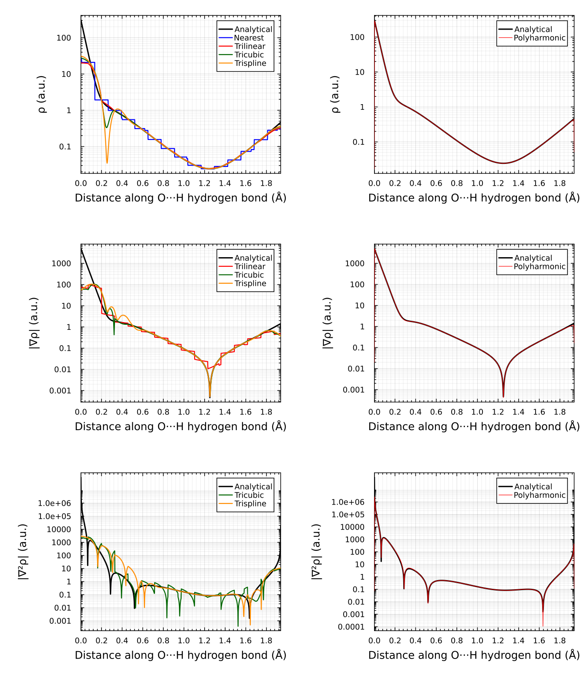

Polyharmonic Splines (PHS)
Overview
Polyharmonic splines (PHS) are radial basis function (RBF) interpolants optimized for smooth approximation of multidimensional gridded data. They are particularly effective for smooth-on-log-scale data and when combined with custom reference functions, enabling physics-informed interpolation in specialized domains like quantum chemistry.
Key features:
- N-dimensional on uniform rectilinear grids (equal spacing per axis)
- C² continuous — local stencils blended across neighbouring nodes
- Analytical derivatives through the standard
derivkeyword - Stencil-based evaluation — cost independent of grid size
- Log-density transform — accurate near singularities (e.g., nuclear cusps)
- Custom reference functions — any callable ρ₀ with derivatives, or
ConstantRef
See Differences from the other methods and current limitations for what PHS does not support yet.
Mathematical Foundation
This section summarizes the polyharmonic spline method. For full details, see the paper.
Basic PHS Interpolant
A polyharmonic spline is constructed as:
\[\omega(x) = \sum_i w_i \phi(\|x - x_i\|) + p(x)\]
where:
\[\{x_i\}\]
are $N$ stencil nodes (grid points)\[\phi(r) = r^K\]
is the radial kernel ($K$ odd, typically $K=3$ for $\phi(r)=r^3$)\[p(x) = v_0 + v_x x + v_y y + v_z z\]
is a linear polynomial augmentation\[w_i\]
and $v$ are interpolation coefficients determined by solving:
\[\begin{pmatrix} \Phi & C^T \\ C & 0 \end{pmatrix} \begin{pmatrix} w \\ v \end{pmatrix} = \begin{pmatrix} \rho \\ 0 \end{pmatrix}\]
where $\Phi_{ij} = \phi(\|x_i - x_j\|)$, $C_i = (1, x_i)$, and $\rho = (\rho_1, \ldots, \rho_N)$ are data values.
Log-Density Smoothing Transform
For data with singularities or rapid variation (e.g., electron density near nuclei), interpolate the transformed function:
\[f(x) = \ln\left(\frac{\rho(x)}{\rho_0(x)}\right)\]
where $\rho_0(x)$ is a smooth reference function (e.g., promolecular density, empirical model, or physical constraint).
The interpolant is built on $f(x)$, which is smooth by design. Evaluation recovers the original density and derivatives via the chain rule:
\[\tilde{\rho} = \rho_0 \exp(f)\]
\[\tilde{\rho}_\xi = \rho_0 \left( f_\xi + \frac{\rho_{0\xi}}{\rho_0} \right)\]
\[\tilde{\rho}_{\xi\zeta} = \rho_0 \left( f_{\xi\zeta} + \frac{\rho_\xi \rho_\zeta}{\rho_0^2} + \frac{\rho_{0\xi\zeta}}{\rho_0} - \frac{\rho_{0\xi}\rho_{0\zeta}}{\rho_0^2} \right)\]
Blending for C² Continuity
Since stencils change discontinuously at grid node boundaries, a blend function combines multiple local interpolants:
\[\rho(x) = \frac{\sum_i w_i(x) \tilde{\rho}_i(x)}{\sum_i w_i(x)}\]
with smooth weight $w_i(x)$ that transitions from 1 at node $x_i$ to 0 at distance $a$ (blend range). This ensures $C^2$ continuity across the domain.
API Usage
Basic PHS Interpolation
using FastInterpolations
# Define grid and data
x = range(0.0, 1.0, 20)
y = range(0.0, 1.0, 20)
data = [sin(xi) * cos(yj) for xi in x, yj in y]
# Create interpolant
itp = phs_interp((x, y), data; stencil_size = 8, degree = 3)
# Query
val = itp((0.5, 0.3))
grad = itp((0.5, 0.3); deriv = (DerivOp(1), DerivOp(0)))With Custom Reference Function
# Define reference density
ref = ConstantRef(1.0) # simple constant reference
# Build PHS with log-transform
itp = phs_interp((x, y), data;
reference_interp = ref,
stencil_size = 8,
degree = 3)
# Stored data is log(ρ/ρ₀); evaluation returns ρ
val = itp((0.5, 0.3)) # ≈ ρ(0.5, 0.3), not log(ρ)Custom Reference with Analytical Derivatives
Create a callable reference function supporting the interface ref(q) and ref(q; deriv=(DerivOp(...), ...)):
struct MyReference
# ... state ...
end
(ref::MyReference)(q; deriv=nothing) = begin
if deriv === nothing
# return value
return ρ₀(q)
else
# return derivatives based on deriv tuple
# deriv = (DerivOp(n₁), DerivOp(n₂), DerivOp(n₃))
# means ∂^(n₁+n₂+n₃)ρ₀/∂x^n₁ ∂y^n₂ ∂z^n₃
...
end
end
itp = phs_interp((x, y, z), rho_data;
reference_interp = MyReference(),
stencil_size = 8,
degree = 3)Parameters and Tuning
| Parameter | Default | Notes |
|---|---|---|
stencil_size | 8 | Stencil nodes per axis (total = stencil_size^N). Increase for smoother but slower interpolant. |
degree | 3 | PHS degree: 1, 3, 5, … (odd only). Higher → smoother, larger condition number. |
blend_factor | 1.0 | Blend range = blendfactor × maxgrid_spacing. Increase for wider blending. |
reference_interp | nothing | Optional custom reference function for log-transform. Use ConstantRef(val) for constant reference. |
reference_data | nothing | Pre-computed reference values on grid (avoids re-evaluating reference_interp at every grid node). |
Measured accuracy/speed trade-offs for these parameters are collected in PHS Performance and Tuning.
Example: Quantum Chemistry
The script scripts/phs/phs_density_comparison.jl demonstrates PHS for electron density interpolation in a phenol dimer, recreating Figure 2 in the paper. It uses:
- Data: DFT-computed electron density (B3LYP/TZ2P, 0.236 Bohr spacing). The committed grid is a 30×42×30 sub-box of the full 75×113×70 grid around the O7…H21 path at the original spacing, with a 12-node margin on every side; the comparison only evaluates along that path, so the error statistics and the figure are identical to the full-grid run
- Reference: Analytical promolecular density (sum of PBE atomic densities from critic2)
- Validation: Comparison of density, gradient, and Laplacian along a hydrogen-bond path
The resulting plot shows exceptional agreement with analytical values, even near nuclear cusps and steep features:

Left column: Standard 3D interpolation methods (nearest, linear, cubic spline, cardinal) vs. analytical DFT values. All exhibit spurious oscillations and errors near the nuclei. Right column: PHS with log-density transform and promolecular reference. Smooth, accurate across the domain, with only minor deviations very close to nuclei.
Polyharmonic spline interpolation was added specifically for applications to physical systems with singularities and steep features, where they achieve better relative results. The results show that PHS with log-density transform and a promolecular reference achieves orders of magnitude better accuracy than nearest, linear, cubic spline, and cardinal interpolation for both the density and its derivatives, even near nuclear cusps, at the expense of higher computational cost.
Running the Example
The script automatically downloads wavefunction files on first run:
julia --project=scripts scripts/phs/phs_density_comparison.jlTo get timings that don't include JIT compilation and stencil caching, run the script twice:
julia --project=scripts -e 'include("scripts/phs/phs_density_comparison.jl"); include("scripts/phs/phs_density_comparison.jl")'This generates phs_density_comparison.png and demonstrates:
- Loading XYZ atomic geometry
- Building PromolecularRef from critic2 PBE wavefunctions
- Constructing PHS interpolant with log-transform
- Evaluating density, gradient, Laplacian analytically
- Batch evaluation for performance
The accuracy and timing tables for this example are in PHS Performance and Tuning.
Differences from the other methods and current limitations
PHS is a local radial-basis method rather than a piecewise polynomial, so parts of the common API do not apply or are not implemented yet:
- Uniform grids only. The stencil geometry is built from one spacing per axis, so results are only correct when every axis is equally spaced. Non-uniform axes are accepted without error but the interpolant then no longer reproduces its own data (tracked as a
@test_brokenpin). - No boundary conditions. Continuity comes from stencil blending, not from end conditions; there is no
bckeyword. - Search and hints. Uniform grids locate the base node in O(1); non-uniform grids use a binary search.
searchis only used for out-of-domain checks andhintis ignored. - Derivatives use the standard
derivkeyword. Thegradient/hessian/laplacianhelpers do not support PHS yet. - Not implemented: adjoint operators,
integrate, complex-valued data, the 1-D bare-vector constructor,GriddedQuery/GridIdxqueries, andClampExtrap/WrapExtrap(useNoExtraporFillExtrap). - Known issue: first derivatives evaluated exactly on a grid node are inaccurate. This and the items above are tracked as
@test_brokenpins intest/test_phs_broken_pins.jl.